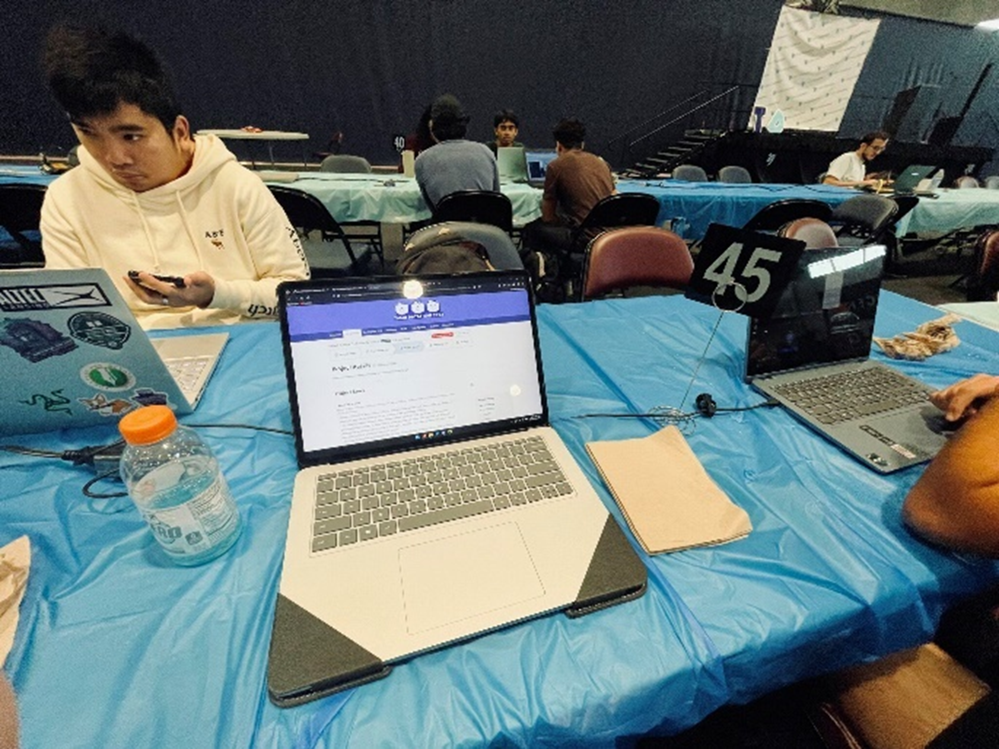
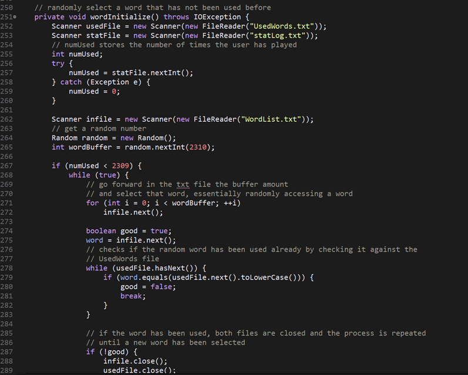
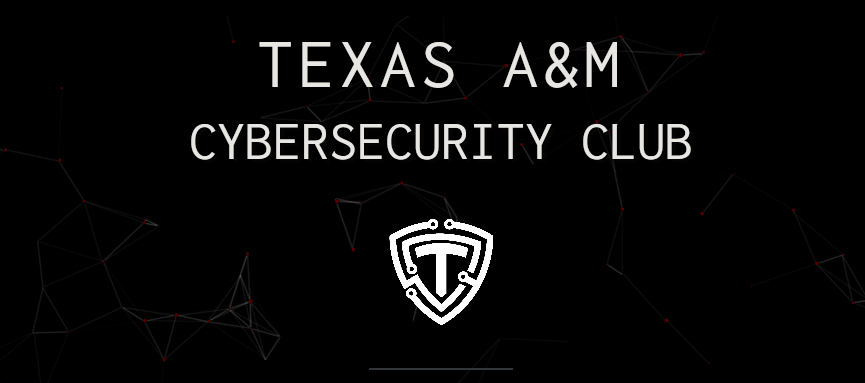
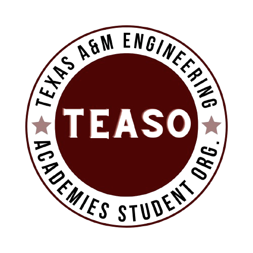
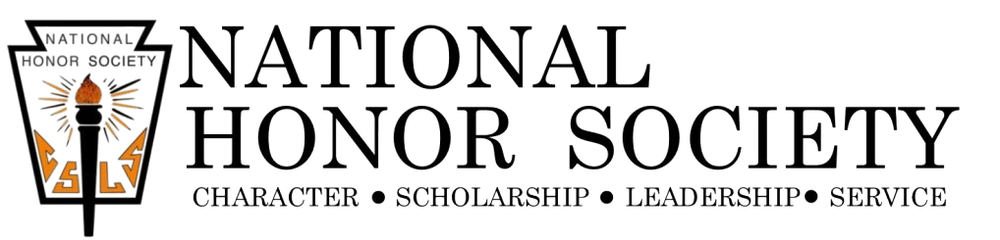

Resume
If your browser cannot display PDFs inline, open the resume in a new tab.
Technical Skills
Programming Languages
Proficient in Python, C, C++, and Java, with some experience in web development using HTML, CSS, and JavaScript. Developed various projects, including a Discord bot and a Wordle game, demonstrating strong coding and problem-solving abilities.
Tools & Technologies
Experienced with Unix/Linux environments, Git for version control, and microcomputers like Raspberry Pi. Utilized Google Spreadsheets API for automation and data handling in projects, showcasing adaptability to different technologies.
Data Handling & AI
Exposed to data processing and analysis using Python. Participated in the 2023 TAMU Datathon, where I cleaned and processed data, used recursive feature elimination, and trained a Keras Sequential Model to predict patient survival, highlighting my ability to work with complex datasets and machine learning models.
Project Management & Communication
Led the development of an automated verification system for TEASO, improving efficiency. Managed communications and collaborated with the treasurer to streamline processes. Provided guidance to new students, showcasing strong project management and communication skills.
Interests
Software Development
I am quite interested in software development because it allows me to create innovative solutions to real-world problems. I enjoy the process of designing, coding, and testing because the feeling of it working in the end makes me know it was all worth it. Being able to build applications that could help make my or anyone's job even a bit easier is very rewarding.


Game Development
Game development fascinates me because it combines creativity with technical skills. I love taking the programming skills I learn in the classroom and finally being able to apply them to something visually satisfying. Designing gameplay mechanics, creating graphics, and coding the game logic is both complex and exciting. I always find myself adding more features than I need, but the feeling of wanting to add and do more is why I enjoy doing it so much.
Cybersecurity
Learning Cybersecurity from the Cybersecurity Club has interested me because it involves protecting systems and data from malicious attacks. In an increasingly digital world, ensuring the security and privacy of information is crucial. I have always enjoyed problem solving and puzzles so I was intrigued by the puzzle aspect of identifying vulnerabilities, developing defense strategies, and staying ahead of potential threats. There are so many different aspects to Cybersecurity and I look forward to finding the one that's most interesting to me.

Extracurricular Activities
TEASO Officer/Ambassador
During my time in the Texas Engineering Academies Student Organization (TEASO), I've had the opportunity manage communications technologies and collaborated with the treasurer to streamline the membership processes.
Additionally, I have served as an ambassador, providing guidance and support to incoming students, sharing my experiences, and promoting the benefits of the Texas A&M Engineering Academies.

National Honors Society
During my high school years, I was an active member of the National Honors Society (NHS) for two years, dedicating over 100 hours to volunteering for various organizations. This experience allowed me to give back to my community in meaningful ways and make a positive impact.
One of the key aspects of my service was volunteering at a children's library. I assisted with organizing books, reading to children, and helping put together events for them to play in.
Additionally, I volunteered at concession stands during school events, where I helped raise funds for various school programs and activities.
I also dedicated time to volunteering at local food banks, where I assisted in sorting and distributing food to families in need.
